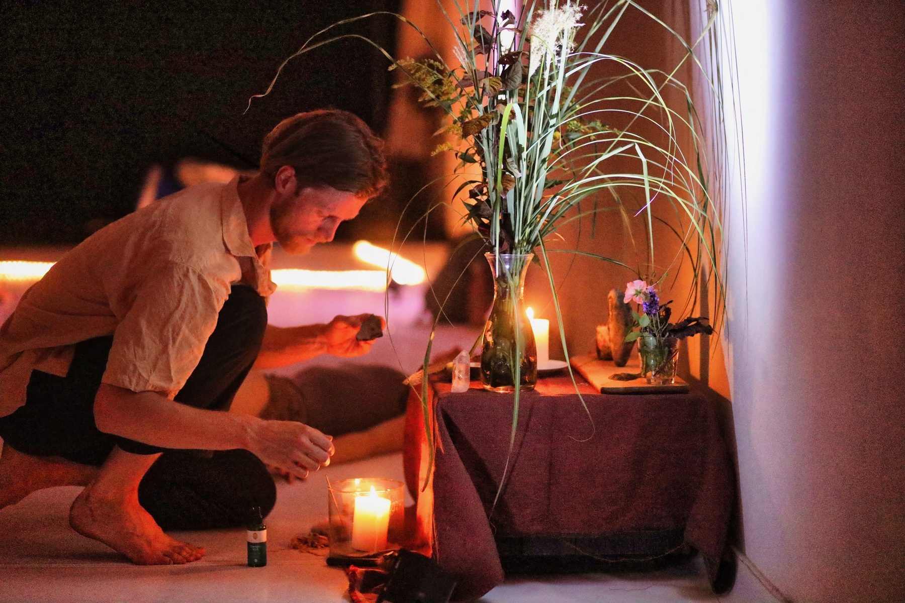
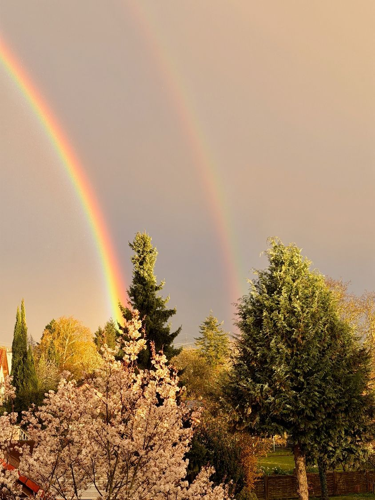

Der Raum für das Wesentliche, das in dir ist und gesehen werden möchte.
Es gibt Dinge, die brauchen mehr Zeit, als ein Gespräch zwischen Tür und Angel hergibt. Und mehr Menschen, als man allein ist.
Der Essenz Raum ist ein Tag in kleiner Gruppe. Geführte Kontemplation, Bewegung und kreative Impulse weben einen Teppich für Intimität, Kontakt und Entschleunigung.
Wir treffen uns von 11 bis 16 Uhr im Studio Pro Arte. Der Tag hat einen Bogen: Wir kommen an, landen im Körper, essen gemeinsam, bringen mit Malen und Visualisieren in Ausdruck, was sich gezeigt hat, und schließen im Kreis in der Stille. Dazwischen gibt es Führung, aber keinen Druck. Du bestimmst, wie viel du zeigst.
Das Tempo ist bewusst langsam. Erst wenn es aus dem Alltag herausgeht, wird sichtbar, was sonst überdeckt bleibt. Die Gruppe trägt das mit: Du wirst gesehen, ohne dich erklären zu müssen. Wer möchte, bleibt danach zum Tanzen (17–20 Uhr) und lässt den Tag in Bewegung ausklingen.
Du musst nichts erzählen. Und wenn du sprichst, wirst du nicht kommentiert, nicht beraten und nicht eingeordnet.
Ein Raum, um dich deiner Essenz zu erinnern.

Tee, sich niederlassen, in Kontakt kommen. Zeigen, was da ist — ohne dass jemand etwas beitragen muss.
Bewegung und Kontemplation. Aus dem Kopf in den Körper, aus dem Alltag in den Raum.
Essen, Pause, draußen sein. Nahrung im wörtlichen Sinn und als Ressource.
Aufstellen, visualisieren, kreativ in Ausdruck bringen. Was sich gezeigt hat, bekommt eine Form.
Ein Kreis, der schließt. Nichts mehr erklären. Im Anschluss besteht die Möglichkeit zum Tanzen.

Entschleunigung ist das Arbeitsprinzip: Erst wenn das Tempo rausgeht, wird sichtbar, was sonst überdeckt bleibt. Dazu geführte Stille und Bewegung, Musik als Begleitung, Visualisieren und Malen, Übungen aus der transparenten Kommunikation — und der Kreis, in dem du gesehen wirst, ohne kommentiert zu werden. Die Haltung dahinter: Wir stellen uns dem, was uns im Weg ist, und trauen uns, es zu teilen.
etwas in dir gesehen werden will, das im Alltag keinen Platz findet. Es ist nichts kaputt daran – es braucht nur Raum. Wenn du Tempo rausnehmen willst, aber weißt, dass du es allein nicht tust. Und wenn du Menschen begegnen willst, ohne dich erklären zu müssen: kein Smalltalk, keine Therapie, etwas dazwischen.
Wenn du mit konkreten Erwartungen kommst — an ein Ergebnis, eine Erkenntnis, ein bestimmtes Gefühl —, wirst du sie hier wahrscheinlich nicht erfüllt bekommen. Und wenn du gerade nicht offen bist, dich zu entschleunigen und dem Nichtwissen in dir zu begegnen, ist es nicht der richtige Tag. Wenn du unsicher bist: schreib mir.
Der Essenz Raum ist ein Tag in kleiner Gruppe im Studio Pro Arte in Freiburg, sonntags von 11 bis 16 Uhr. Geführte Kontemplation, Bewegung und kreative Impulse geben Raum für Präsenz, Begegnung und Stille. Wer möchte, bleibt danach zum Tanzen (17–20 Uhr).
Nein, weder noch. Es gibt keine Diagnose, keine Behandlung und keine Zielvorgaben. Ich halte den Raum, und du bestimmst, wie viel du zeigst. Wenn du eine Behandlung brauchst, ist eine Fachperson die bessere Adresse.
Nein. Du kannst den ganzen Tag schweigen, und es wird niemandem auffallen. Vieles überträgt sich, ohne dass darüber gesprochen wird.
Dann nimmst du dir, was du brauchst: dich hinlegen, rausgehen, still sein. Du musst dich nicht abmelden und nichts erklären.
Bequeme Kleidung, warme Socken, etwas zum Sitzen oder Liegen. Für das Mittagessen ist gesorgt.